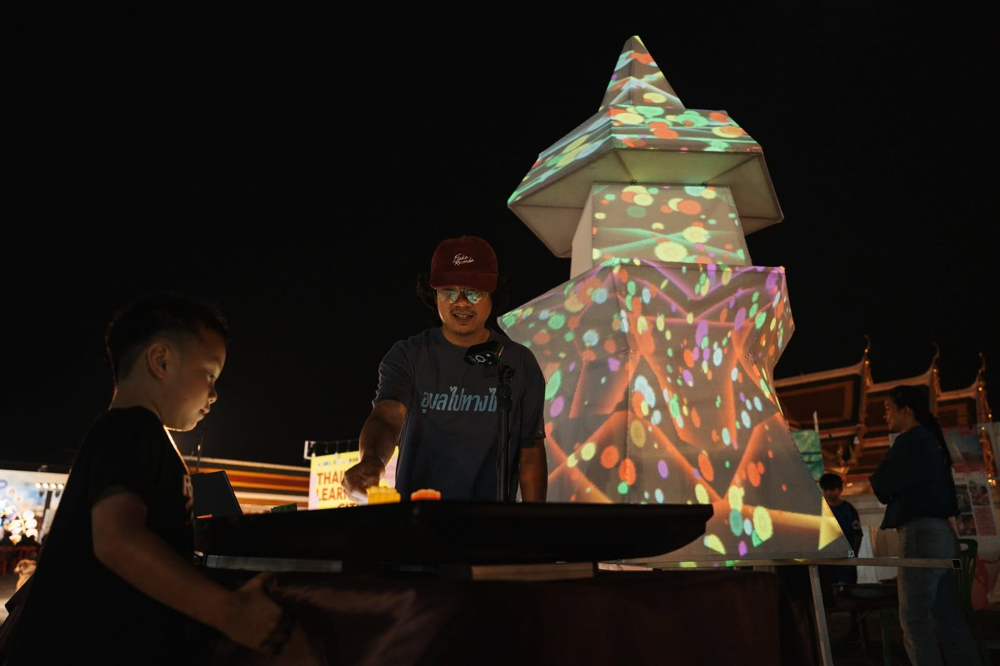

An interactive ritual sculpture built around one simple act: making a wish for the city. Visitors take part in hands-on activities like coloring and local craft, and these small acts of making become a shared ritual of hope for the place they live. AFTERWISH is a recurring concept, reshaped for each site it is shown.
Photography: Krai Sridee
Photos: ลาวเด้อ LOUDER, The City Leader